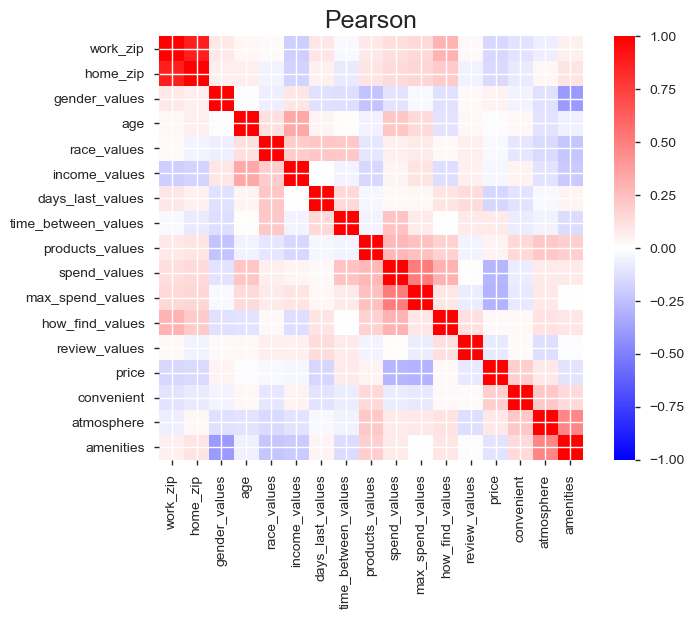
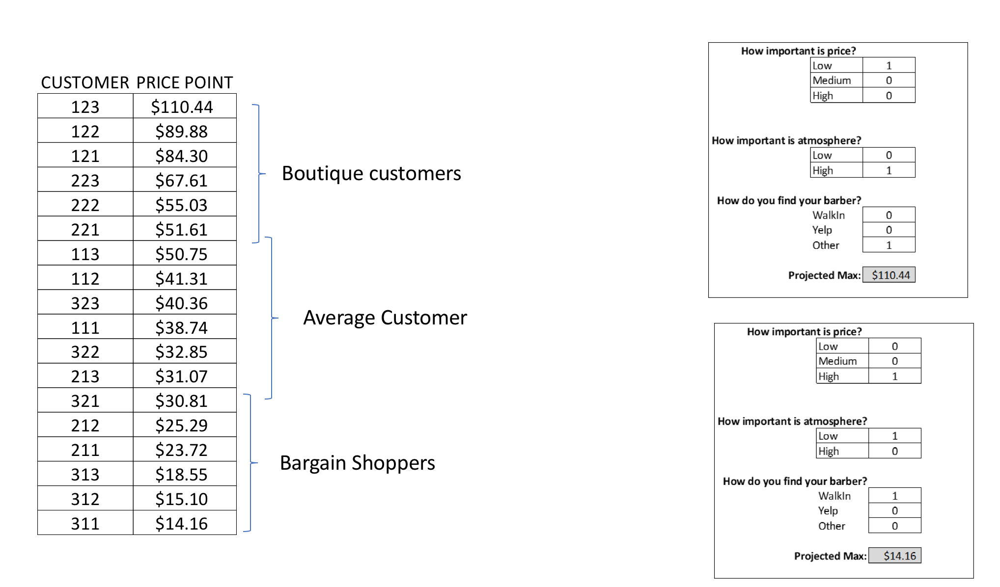

Barbershop Case Study
Team Members:
- Andy Felicitas
- Jay Mandavia
- Lorenzo Yniguez
- Tommy Steed
DPS Insights
Objective
Our goals for this project are to:
1. Analyze local barbershop trends based on demographics and yelp reviews.
2. Utilize survey and yelp data to create actionable insights for local businesses.
Questions to Answer
- What factors determine a customer’s price point and what can businesses do with this information?
- Can we predict if clients purchase products and if it's worth carrying inventory?
- Can we predict the max amount a client would spend on a haircut?
Technologies Used
✔ Data Wrangling with Python|Pandas
✔ Web Scraping with Beautiful Soup & Google
✔ Machine Learning in Rstudio & Sklearn
✔ Visualizations in Matplotlib & GGPlot
✔ Interactive Dashboard in Power BI
✔ Web Development in html, css & js
✔ Presentation in reveal.js, ipynb-md & R-md
Yelp Scraper
# YELP SEARCH BY BUSINESS & ZIPCODE
def search_yelp(search, zipcode):
# SCRAPE FUNCTION FOR BUSINESS METADATA
def scrape_yelp(url):
# FUNCTION TO CREATE A PANDAS DF
def create_table():
# FUNCTION TO SCRAPE REVIEWS
def get_review_content(url2):
Full Script on DPS Insights
DPS Survey
Blog Post Google Forms Survey
Survey Insights
Whites and Asians spend roughly the same amount, but the former goes for less frequent haircuts. About a 20 day difference.
Survey Insights
Hispanic/Latino spend the most and go the most often, every 2.5 weeks.
Predictive Model
Will the customer buy product after the haircut?
# Logistic Regression in Python
from sklearn.linear_model import LogisticRegression
classifier = LogisticRegression(class_weight='balanced')
Source Code Logistic Regression
Pearson Correlation Matrix
Business Question
Men's Hair Salons
What factors determine a customer’s price point and what can businesses do with this information?
Customer Segmentation
Predictive Model
In order to determine what factors drive price point, DPS commissioned a customer survey. Results of this survey were fed into a predictive model.
Using predictive modeling it was determined that there are 3 primary factors that determine price point:
3 primary factors that determine price point :
1. Importance of price
2. Importance of atmosphere
3. Method of finding the salon
Predictive Model Factors
Base Case: Projected Price Point $40.36
This is what we would guess before we know anything about a person.
Cheap Haircut
| Price Importance | Factor |
|---|---|
| Low | 274% |
| Medium | 168% |
| High | 100% |
Clients that pay more place an emphasis on Atmosphere
| Atmosphere Importance | Factor |
|---|---|
| Low | 46% |
| High | 100% |
Yelp Clients pay on average 81% of what referrals are willing to pay.
| How did you find? | Factor |
|---|---|
| Walk in | 76% |
| Yelp | 81% |
| Referral | 100% |
Customer Segmentation
Business Insights
Using the data to make more informed business decisions
High End Boutiques:
# Referrals are more important than Yelp
# Atmosphere is key
# Price is of no concern
Supercuts:
# FOCUS on Yelp
# Atmosphere does not matter
# Price is KEY